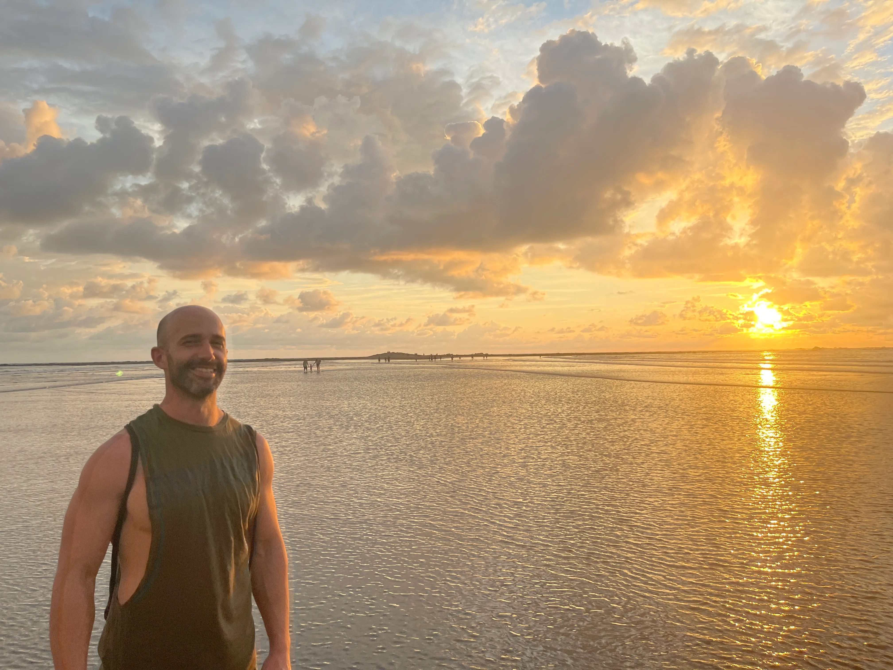

Who this is for
- You want to grow healthier, more present, and more connected to heart, purpose, and even pleasure.
- You are open to holistic support for greater vitality, energy, and enjoyment in life.
- You’re ready to see yourself in greater honesty, and make meaningful change.
The 4-Step Process
- Reveal: Identify beliefs and patterns.
- Realize: Identify what you’d rather believe, or how you’d rather operate.
- Rebalance: Embody it... breathe, accept, unravel, focus.
- Rebuild: Create aligned practices, boundaries, and momentum in life and relationships.
Meet Paul
I’m Paul (Pauko on the Island). My mission is to help people return to wholeness through heart-based work, emotional healing, and practical guidance. This journey blends ancient wisdom with modern tools so you can live fully and lead from integrity.

Client Words
“Speak to Paul, he will absolutely change your life.” — Scott Anthony, Australia
Start Your Wholeness Journey
Book a free discovery call and let’s map the next step for your heart, health, and life.
Book Your Call